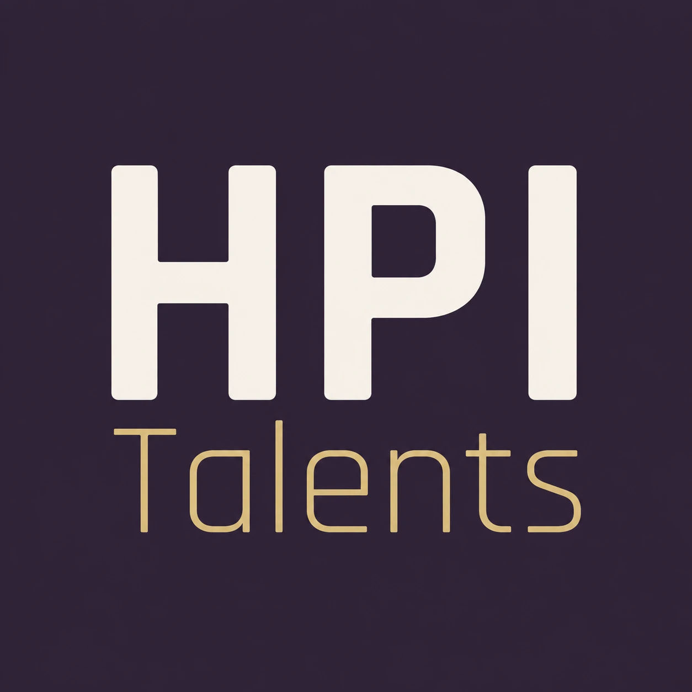

Replay gratuit
« PING PONG Live, 60' » Je réponds à toutes vos questions
Je vous propose un format exceptionnel, unique et stimulant. Je pratique cet exercice dynamique depuis des années et je le trouve vraiment très utile et intéressant. Dans ce programme, je réponds en direct aux questions au fur et à mesure de leur arrivée dans le chat. Le replay est ensuite disponible en accès libre.